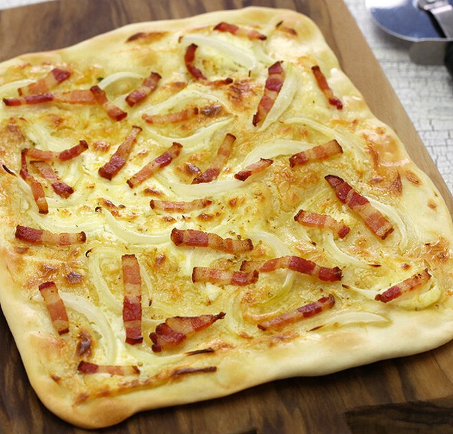

Tarte Flambée

Description
While this tarte flambé recipe is a pizza found in most communities along the German-French border, it goes by a totally dessert-sounding name. Toppings include bacon, onions, and a creamy cheese mixture.
Ingredients
- 12 ounces sliced bacon, cut crosswise into 1/2-inch pieces
- 4 (5 ounce) balls prepared pizza dough
- 1 large yellow onion, sliced
- 1 cup fromage blanc (French-style fresh cheese)
- 1/4 cup creme fraiche
- 1 pinch ground nutmeg
- Salt and freshly ground black pepper to taste
- 1 pinch cayenne pepper
Steps
- Place bacon in a skillet and cook over medium-high heat until cooked but not crisp and fat has rendered out, about 8 minutes. Drain in a strainer; reserve fat.
- Place skillet back over medium heat. Add sliced onions. Cook briefly just until they lose their raw edge and soften up slightly, 3 to 5 minutes. Add a teaspoon or 2 of bacon fat if the pan seems too dry. Remove the skillet from heat and allow to cool to room temperature.
- Mix fromage blanc, crème fraîche, nutmeg, salt, black pepper, and cayenne pepper together in a mixing bowl.
- Place 1 ball of pizza dough on a well-floured surface. Flatten and roll out to a 10- or 12-inch thin circle. Transfer to a cold cast iron pan. Heat over medium-high heat to precook the bottom of crust. As dough heats and bubbles appear, deflate them with the tines of a fork, so crust ends up thin and crisp (not chewy). When bottom is nicely browned and just about to start getting charred, 5 to 7 minutes, remove from heat. Repeat with remaining dough.
- Spread a generous amount of cheese mixture over crust. Top evenly with some onions and bacon. Broil 5 or 6 minutes until edges are browned and starting to lift. Repeat for remaining tartes.